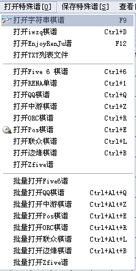

如何用五子妙手来管理你手中的棋谱与常见问题集
#1 如何用五子妙手来管理你手中的棋谱与常见问题集 作者：小丸.net 发表时间：2008-2-3 13:41:17
五珠定石谱,五手两打谱,实战谱,评论谱......
也许您的手中,有很多很多这样的谱,或许是LIB文件,或许是SGF文件,或许是POS文件,多的乱无头绪,虽然有一大堆,你却不能快速的找到他......怎么办,怎么办?
用五子妙手来管理吧?
五子妙手是国内唯一一套集打谱,研究,管理棋谱的综合性棋谱管理软件,他的打谱功能不亚于RENLIB,他的管理功也绝不逊色于国内其它任何软件,那么,有了他,我们怎么样才能来管理好我们的棋谱呢?
1.如何输入棋谱?

如果您手中的纸质的棋谱,没有录入电脑,那么,你可以新建棋谱后把棋子一个一个的录入到谱上,如果你手中有POS,SGF,ORC谱,您可以利用打开特殊谱功能将以上谱打开,如果您在中游,QQ游戏,边锋游戏,联众游戏中下棋,您可以在下完一局后在没有开始下一局时点击保存棋谱按扭来保存您的棋谱,然后利用五子妙手的打开特殊谱功能来打开以上游戏保存的谱.当然,您还可以利用批量打开谱的功能,把大批量的谱一次性打开后一次性保存到您的谱库中.
在保存谱时,您可以选择开局,对局名称,对手名称,三手交换,五手两打,规则,用时等.详细的信息在以后您管理棋谱是很有用的.
2.如何输出棋谱?
A.您要在网站上贴图,您可以使用保存特殊谱下的导出RENA谱功能,导出的RENA代码可以直接在可以显示棋谱的网站论坛直接显示.代码具体使用方法各网站大同小异,详见各网站信息.
B.保存SGF谱,SGF谱有很详细的棋谱信息,利用五子妙手的打开SGF功能可以读入相应的信息,在棋谱交流上是很有用的.
C.保存POS谱,如果您想在黑石上计算当前棋谱,您可以把他保存为POS文件利用黑石的读入功能来读入POS文件.
D.保存图片,保存部分图片,导出图片功能不用说了吧!
E.保存IWZQ代码,利用这个功能,可以与IWZQ里的棋谱管理器进行互动.
F.保存在线图像:无须任何空间,一段代码直接像图片一样贴到网站里去.
G.复制图片:要写WORD,直接用CTRL+C复制图片,贴到WORD里去即可,同样适用于QQ里贴图
H.保存博客互动代码,生成的代码可以直接贴到迅婕的博客系统中,自动生成棋谱.
3.棋谱类别的管理?
您可以利用五子妙手对您的棋谱进行分类,分类由树形结构生成,树的可以无限伸展深度,点击设置->棋谱库维护可以对棋谱库进行添加,删除,修改等操作.
4.导出棋谱?
朋友问你要某某某类别的一批棋谱,或者某个曾经下过的棋谱,或者某个比赛的棋谱,是不是很发愁?不用急,五子妙手为您准备了这样的功能,在棋谱库维护对话框下,我们为您准备了导出POS,SGF,GIF,部分GIF功能,您可以把所选中类别的谱导出到系统的某个目录下,当然,您还可把他打包.
在打开棋谱对话框(棋谱->打开棋谱<F2>),您也可以把当前列表中显示的谱全部打包成SGF谱,您可以利用查询页面查询您所需要的棋谱.
5.棋盘,棋子,棋线,颜色?
在设置菜单下,您可以对棋盘,棋子,棋线的颜色等进行相应的设置.方法很简单,完全傻瓜操作.
6.我的棋谱突然所有的棋子全部变成了黑色的,没有白棋了?
请把五子妙手目录下的jsrif.ini删除再重新启动五子妙手就可以解决了．
7.我想一次性把我谱库里的所有谱一下子传给别人，怎么弄？
点打开棋谱，然后选择查询页，不可输入任何信息，直接点击查询，即可查询出所有的谱，然后点击打包即可以把所有的谱打包成ZIP文件．传给别人后，别人可以利用批量打开SGF谱的功能来一次性把全部谱录入到五子妙手中．这样的优点为是速度快，这样的缺点是打开谱只能输入到一个类别下面去．
8.为什么五子妙手不支持LIB文件？
lib文件的优点是树形分枝结构明确，对研究很有用，但他并不实用，网上大多都是实战的研究谱，往往他们有大量的文字，这用样LIB文件就不太好管理，主要是查询不便，您如果要查某个比赛某个人的比赛，用LIB方便吗？何况您有n个LIB文件．况且，很多LIB文件往往有很多无用的谱．不如看看实战，研究研究．所以，以后的开发中，五子妙手不再支持LIB格式．
9.现